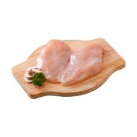
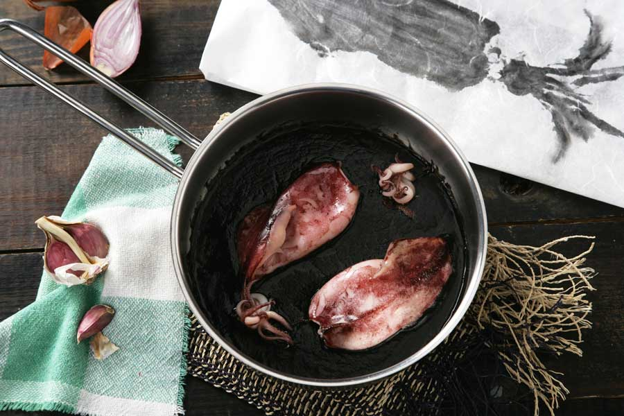
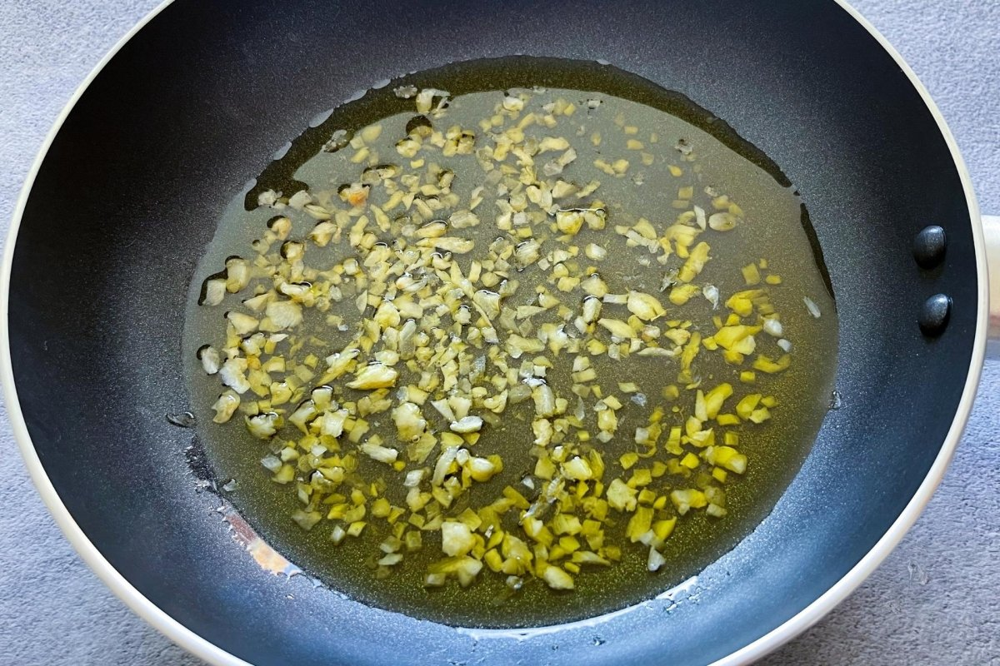
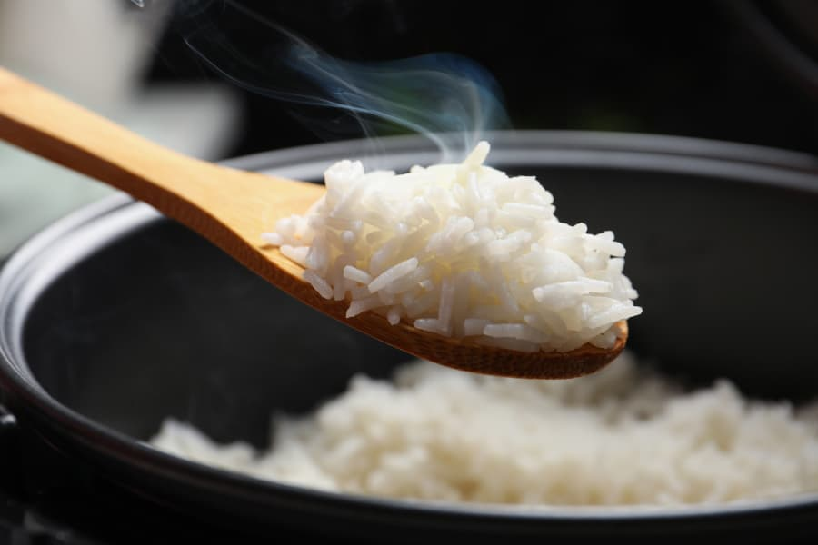
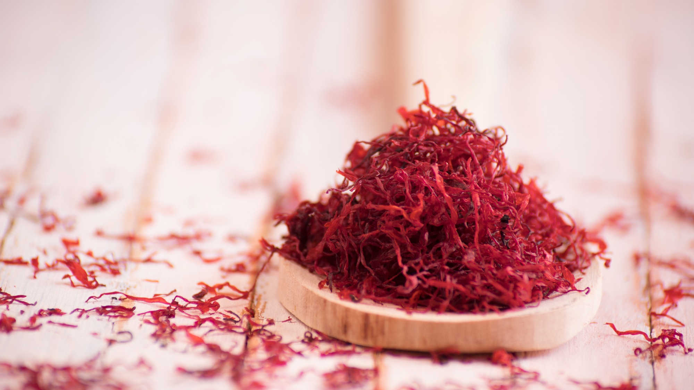
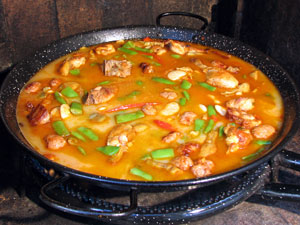
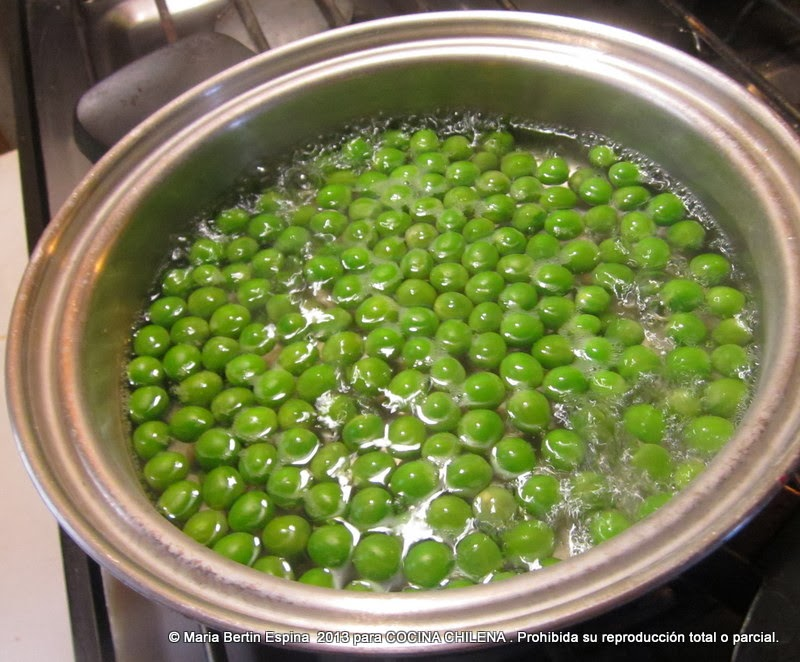
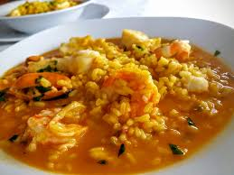
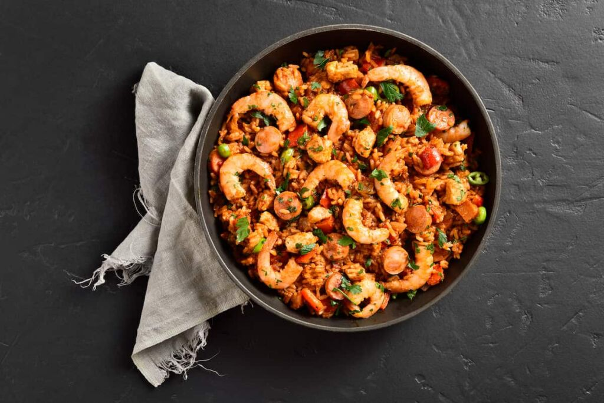
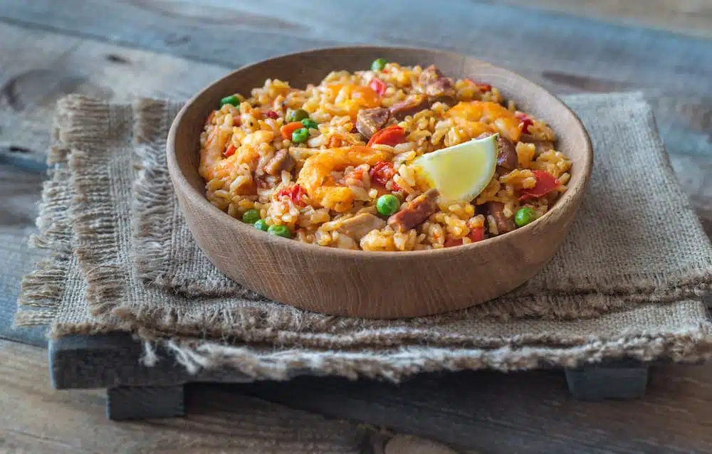

Volver al menú de inicio
Volver al menú de inicio
Plato 1: Paella Mixta
- ½ pollo troceado
- 200 g. de magro de cerdo
- 2 calamares
- 8 langostinos
- 8 mejillones
- 3 cucharadas de salsa de tomate o 1 tomate
- 2 dientes de ajo
- 1 pimiento verde
- ½ pollo troceado
- 1 taza de arroz bomba
- 3 tazas de agua o caldo
- Unas hebras de azafrán
- ½ taza de arvejas frescas para completar
- Rodajitas de limón para servir
- Cortar el pollo y el magro de cerdo en trozos pequeños y uniformes. Limpiar los calamares y cortarlos en anillas junto con sus tentáculos. Lavar bien los mejillones y reservar los langostinos.

- En una paellera amplia, calentar un poco de aceite de oliva a fuego medio-alto. Sellar los trozos de pollo hasta que estén bien dorados por fuera (6-8 minutos). Retirar y reservar. Hacer lo mismo con el magro de cerdo. Reservar junto al pollo.
- En la misma paellera, dorar ligeramente las anillas de calamar y sus tentáculos durante 2-3 minutos. Añadir los langostinos y los mejillones. Cocinar hasta que los mejillones se abran. Retirar los mariscos y quitar una de las conchas de los mejillones.

- Sofreír los ajos picados y el pimiento verde cortado en tiras en la misma paellera. Cuando estén dorados, agregar el tomate rallado y cocinar a fuego medio-bajo durante 5-7 minutos, hasta que se reduzca y espese.

- Incorporar el arroz y rehogar en el sofrito durante unos minutos, hasta que el arroz esté nacarado. Añadir de vuelta el pollo, el cerdo y los calamares. Mezclar suavemente para integrar todos los ingredientes.

- Tostar ligeramente las hebras de azafrán en una sartén pequeña a fuego muy bajo durante 20-30 segundos. Disolver el azafrán en un poco del caldo caliente para distribuir mejor su sabor.

- Añadir el caldo a la paellera (3 tazas por cada taza de arroz). Llevar a ebullición y cocinar a fuego alto durante 9-10 minutos, asegurando que el arroz absorba bien el caldo. Bajar el fuego y cocinar otros 7-8 minutos más sin remover el arroz. Sacudir la paellera suavemente de vez en cuando.

- Mientras se cocina el arroz, blanquear las arvejas en agua con sal durante 2 minutos. Escurrir y reservar.

- En los últimos 2-3 minutos de cocción, colocar los langostinos y los mejillones reservados sobre el arroz.

- Cuando la paella esté lista, colocar las arvejas escurridas sobre la superficie. Tapar y dejar reposar durante 5 minutos para que los sabores se asienten. Servir con rodajas de limón alrededor de la paellera para que cada comensal pueda exprimirlas a su gusto.


Volver a inicio